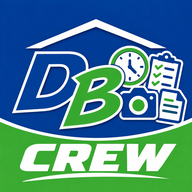

DB Crew
Sign in with your Deitemeyer Brothers Google account. Your hours, your site checks and your close-outs post to JobTread under your name.
Signing you in…
Google may send you to the Gmail app to confirm. Come back here after. If nothing happens, tap the button again — that is safe.